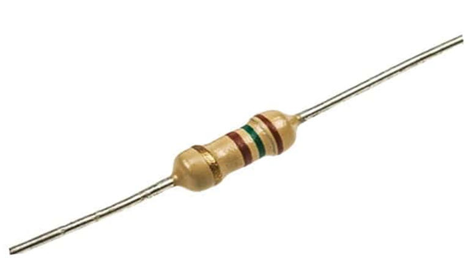
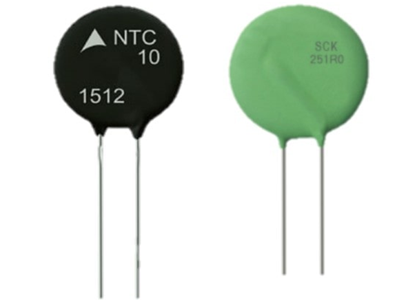
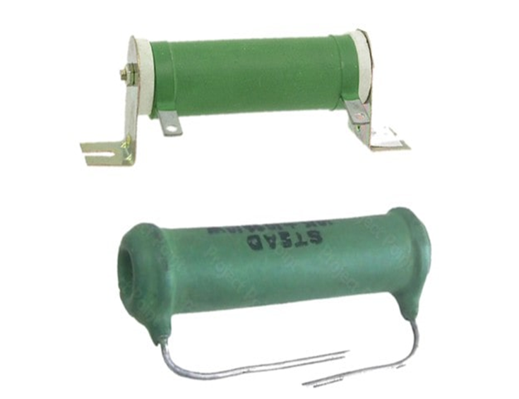
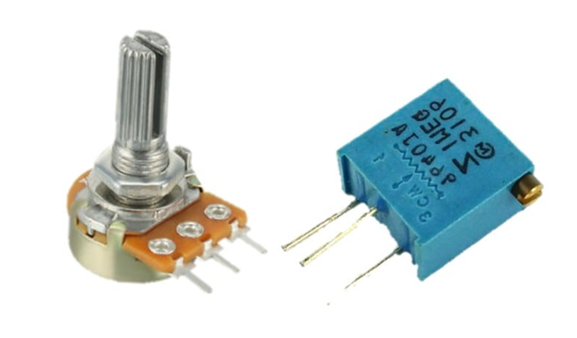
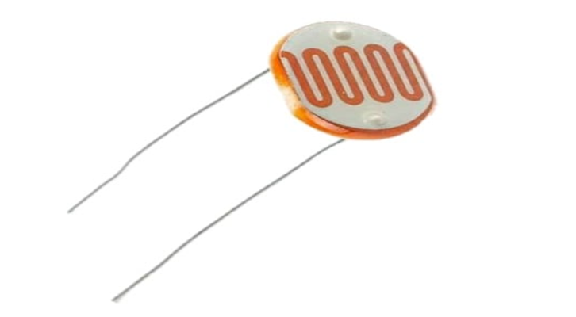
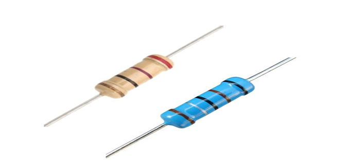

المقاومات الكهربائية
هناك عدد كثير من أنواع المقاومة الكهربائية وسأذكر فقط أهم الأنواع الشائعة والمستخدمة بكثرة وهي كما يلي:
المقاومة الكربونية:
تُصنع هذه المقاومة كما يدل اسمها من الكربون ويتم تغليفها بغلاف بلاستيكي ويصنع أطرفها من النحاس المطلي بالقصدير. وهي مقاومة شائعة الاستخدام ومنخفضة التكلفة ومتينة، وذات قدرة منخفضة إلى متوسطة، ولها محاثة inductance منخفضة مما يجعلها مثالية لتطبيقات ذات التردد العالي، وتتوفر في نطاق واسع من القيم من 1 أوم إلى 22 ميجا اوم (1Ω to 22 MΩ).
العيب الرئيسي لمقاومة الكربون أنها حساسة بدرجة كبيرة لدرجة الحرارة وتنتج بعض الضوضاء noise وتعاني من مشاكل في الاستقرار عندما تكون ساخنة.
المقاومات الكربونية مزودة بشريط ملون على جسمها الأسطواني. ويمكن معرفة قـيمتها عن طريق شفرة الألوان هذا أو قياسها بواسطة جهاز الأوميتر.

المقاومة الحرارية:
المقاومة الحرارية (Thermal Resistors) هي مقاومة متغيرة مصنوعة من أشباه الموصلات، تعتمد قيمتها على الحرارة حيث إن قيمتها تتغير مع تغير درجة الحرارة، تقـل قيمتها عند زيادة درجة الحرارة، وتزداد القيمة عند انخفاض الحرارة.
يتم استخدامها لاستشعار التغيرات الصغيرة في درجة الحرارة، عندما يكون هناك تغير في درجة الحرارة، مهما كان صغيراً، سيقابله تغيير كبير في قيمة المقاومة. وتتوفر بقيم تصل إلى بضعة ميجا أوم.

مقاومة السلك الملفوف:
مقاومة السلك الملفوف (Wire Wound Resistor) يتم صنعها عن طريق لف سلك عالي المقاومة حول أسطوانة من مادة عازلة مثل السيراميك، ويتم تغطية السلك الملفوف بغلاف من مادة عازلة مقاومة للحرارة يقاوم تأثير تغير درجة الحرارة المحيطة.
تُستخدم مقاومات السلك الملفوف عادةً مع التطبيقات ذات القدرة الكبيرة، وتتوفر أيضًا بقيم صغيرة جدًا للقدرة الكهربائية وبدقة عالية جدًا، ومتاحة بسهولة لمجموعة واسعة من التصنيفات وبقيم تتراوح من 1 Ω إلى 1 MΩ.
وتكلفة هذه المقاومات أعلى بكثير من المقاومة الكربونية. وعادةً ما يتم استخدام المقاومة ذات السلك الملفوف في حال كانت الكربونية لاتفي بالغرض.
العيب الرئيسي لهذا المقاومة هو الحث الذي ينشأ بسبب تركيبها الشبيه بالملف وخاصة عند الترددات العالية، ويمكن حل هذه المشكلة بلف نصف السلك في اتجاه ونصف السلك الآخر في الاتجاه المعاكس بحيث يُلغي الحث الناتج عن هذين النصفين بعضهما البعض ومن ثم يصبح التأثير الحثي الصافي يساوي صفر ولكن تكون تكلفتها أعلى.

المقاومة المتغيرة:
المقاومة المتغيرة يمكن من خلالها الحصول على قيم مختلفة للمقاومة على حسب وضع الطرف المنزلق لهذه المقاومات.
حيث يوجد شريط معدني أو ملف نصف دائري يمثل المقاومة ومن خلال تغيير نقطة الاتصال مع هذا الملف نغير الطول الفعال للعنصر المقاوم، وبالتالي تتغير المقاومة.

المقاومة الضوئية:
المقاومة الضوئية (Light Dependent Resistor LDR) تعتمد قيمتها على شدة الضوء الساقط عليها. وتتكون من كبريتيد الكادميوم الذي يحتوي على عدد قليل من الإلكترونات عندما لا يكون معرض للضوء.
وفي حالة سقط عليها شعاع ضوئي، يتم تحرير الإلكترونات وبالتالي تزداد موصليتها. ومن ثم فهي توفر مقاومة منخفضة عند سقوط الضوء عليها، وتوفر مقاومة عالية في الظلام.

المقاومة غير الخطية:
المقاومات غير الخطية تسمى أيضًا (Varistor) تشتهر بأن لديها منحنى خصائص V-I غير خطي. هذا يعني أن المقاومة ليست منتظمة (not uniform) ولا تتبع قانون اوم. وهي مصنوعة من مواد مثل كربيد السيليكون وأكسيد الزنك.
مقاومات الطبقة المعدنية والكربونية:
تتكون مقاومات ذات الطبقة أو الغشاء (Film Resistor) من نوعين: مقاومة ذات طبقة معدنية(Metal Film) ومقاومة ذات طبقة كربونية (Carbon Film).
ويتم صنعها عن طريق ترسيب طبقة رقيقة من مادة موصلة مثل الكربون النقي أو المعدن على قضيب عازل. ويمكن الحصول بسهولة على القيمة المرغوبة لمقاومة الطبقة المعدنية أو الكربونية إما عن طريق تخفيف سمك الطبقة أو زيادتها.
وتمتلك هذه المقاومات قيم كبيرة أعلى بكثير مقارنةً بالأنواع الأخرى حيث تزيد عن 10MΩ.
